PERSONAJES BOLIVIANOS DEL DIA DEL TRABAJO
PERSONAJES BOLIVIANOS

Victor Paz Estenssoro
Aunque político, impulsó reformas importantes tras la Revolución de 1952, incluyendo derechos laborales y el voto universal.
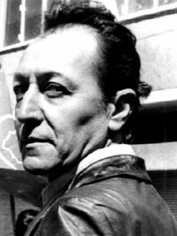
Marcelo Quiroga
Defensor de los derechos laborales y la justicia social, impulsó la nacionalización de recursos y denunció la corrupción.
Domitila Chungara
Líder minera y símbolo de la lucha de las amas de casa, denunció la vulnerabilidad y explotación en los centros mineros.
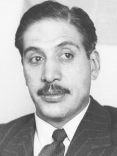
Juan Lechín Oquendo
Es un histórico dirigente sindical y figura clave que estuvo en la Central Obrera Boliviana (COB) y fundador de la Falange.
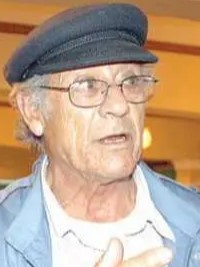
Filemon Escobar
Un dirigente minero y político que defendió los derechos de los trabajadores ademas fue el creador del partido MAS.
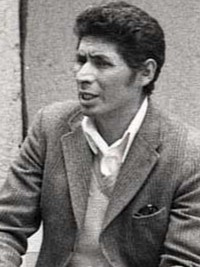
Simon Reyes Rivera
Fundador de la Central Obrera Boliviana (COB) y Partido Comunista de Bolivia, tambien organizador del movimiento obrero.
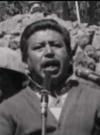
Federico Escóbar Zapata
Es un líder sindical minero, que fue protagonista en la lucha por mejores condiciones laborales en las minas de Bolivia.
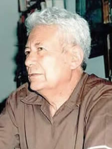
Guillermo Lora
Fue un Intelectual y líder trotskista, influyó en el movimiento obrero con su pensamiento político comunista y trotskista.
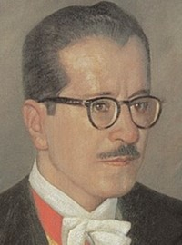
Hernan Siles Suazo
Participó en procesos históricos que fortalecieron las reformas sociales y laborales, ademas con el se volvio a la democracia.
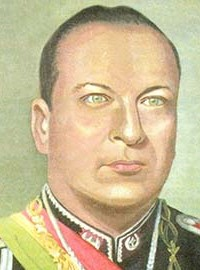
Gualberto Villarroel
Presidente que impulsó reformas sociales y apoyó a sectores obreros e indígenas, promoviendo avances en derechos laborales.
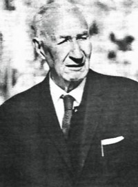
Tristán Marof
Intelectual y pensador socialista que influyó en el movimiento obrero boliviano con ideas sobre justicia social y trabajo digno.
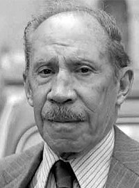
Augusto Céspedes
Periodista y político que documentó y defendió las luchas obreras, especialmente en el contexto de la Guerra del Chaco.
LOS DERECHOS LABORALES

Carlos Mesa
Carlos Mesa es un historiador, periodista y expresidente de Bolivia, reconocido por su aporte a la difusión de la historia nacional. En su canal comparte análisis, documentales y contenidos educativos sobre Bolivia y América Latina. Visita su canal para aprender más sobre nuestra historia..
Visita mi sitio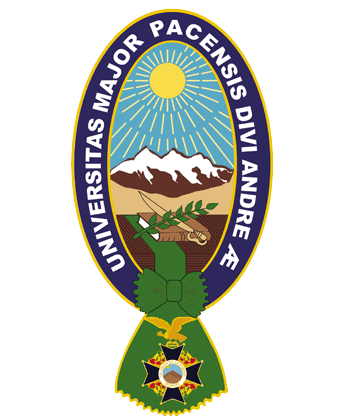
Umsa
La Universidad Mayor de San Andrés (UMSA) es una de las principales universidades públicas de Bolivia, ubicada en La Paz. Destaca por su formación académica, investigación y aporte al desarrollo del país, siendo un referente en educación superior y producción de conocimiento en diversas áreas.
Visita mi sitio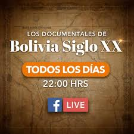
Bolivia Siglo XX
Contenido educativo sobre la historia de Bolivia en el siglo XX. Mas información en la pagina web de Carlos Mesa.